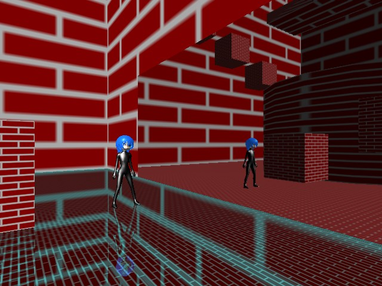

サンプルプログラム 鏡面効果基本 シェーダー使用版 ( Direct3D 9用、要シェーダーモデル２．０ )

鏡面効果基本 をプログラマブルシェーダーを使用するように変更したサンプルプログラムです。
シェーダー化のメリットとしては、元のサンプルでは鏡に移る絵の歪みを抑えるために鏡を沢山の頂点で分割して描画していた箇所が、
４頂点だけで表せるようになるので、プログラムがすっきりするのと、頂点分割よりも歪みが少ないことです。
逆にデメリットとしてはライティング効果も加えたい場合は自分でライティング処理をシェーダーで書かなければならないことです。
元のサンプルでは通常の頂点描画処理を使用しているのでライティングが自動的に掛かりますが、今回のサンプルではシェーダープログラムが
煩雑になるのを避けるためにライティング処理は省いています。
尚、このサンプルでは Ver3.08c で VERTEX3DSHADER に追加した spos というメンバ変数を使用していますので、実行の際は Ver3.08c 以降を使用してください。m(_ _)m
プログラムの実行に必要なファイルのセットはこちらにあります。
Ｃ＋＋のプログラム
鏡面処理の頂点シェーダープログラム
鏡面処理のピクセルシェーダープログラム
戻る